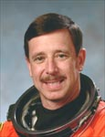

Lyndon B. Johnson Space Center
Houston, Texas 77058
|
National Aeronautics and Space Administration Lyndon B. Johnson Space Center Houston, Texas 77058 |
 |
Biographical Data |
||
Scott J. "Doc" Horowitz, Ph.D. (Colonel, USAF, Ret.)
NASA Astronaut (Former)
PERSONAL DATA: Born March 24, 1957, in Philadelphia, Pennsylvania, but considers Thousand Oaks, California, to be his hometown. Married to the former Lisa Marie Kern. They have three children. He enjoys designing, building, and flying home-built aircraft, restoring automobiles, and running. His father, Seymour B. Horowitz, resides in Thousand Oaks, California. His mother, Iris D. Chester, resides in Bluffton, South Carolina. Lisa’s mother, Joan Ecker, resides in Jensen Beach, Florida.
EDUCATION: Graduated from Newbury Park High School, Newbury Park, California, in 1974; received a bachelor of science degree in engineering from California State University at Northridge in 1978; a master of science degree in aerospace engineering from Georgia Institute of Technology in 1979; and a doctorate in aerospace engineering from Georgia Institute of Technology in 1982.
SPECIAL HONORS: Distinguished Flying Cross; NASA Exceptional Service Medal (1997, 2001); Defense Meritorious Service Medal (1997); NASA Space Flight Medals ( STS-75 1996, STS-82 1997, STS-101 2000, STS-105 2001); Defense Superior Service Medal (1996); USAF Test Pilot School Class 90A Distinguished Graduate (1990); Combat Readiness Medal (1989); Air Force Commendation Medals (1987, 1989); F-15 Pilot, 22 TFS, Hughes Trophy (1988); F-15 Pilot, 22 TFS, CINCUSAFE Trophy; Systems Command Quarterly Scientific & Engineering Technical Achievement Award (1986); Master T-38 Instructor Pilot (1986); Daedalean (1986); 82nd Flying Training Wing Rated Officer of the Quarter (1986); Outstanding Young Men In America (1985); Outstanding T-38 Instructor Pilot (1985); Outstanding Doctoral Research Award for 1981-82 (1982); Sigma Xi Scientific Research Society (1980); Tau Beta Pi Engineering Honor Society (1978); 1st Place ASME Design Competition.
EXPERIENCE: Following graduation from Georgia Tech in 1982, Scott worked as an associate scientist for the Lockheed-Georgia Company, Marietta, Georgia, where he performed background studies and analyses for experiments related to aerospace technology to validate advanced scientific concepts. In 1983, he graduated from Undergraduate Pilot Training at Williams Air Force Base, Arizona. From 1984 to 1987, he flew as a T-38 instructor pilot and performed research and development for the Human Resources Laboratory at Williams Air Force Base. The following two years were spent as an operational F-15 Eagle Fighter Pilot in the 22nd Tactical Fighter Squadron stationed at Bitburg Air Base in Germany. In 1990, Scott attended the United States Air Force Test Pilot School at Edwards Air Force Base, California, and was subsequently assigned as a test pilot flying A-7s and T-38s for the 6512th Test Squadron at Edwards. Additionally, from 1985 to 1989, Scott served as an adjunct professor at Embry Riddle University where he conducted graduate level courses in aircraft design, aircraft propulsion and rocket propulsion. In 1991, as a professor for California State University, Fresno, he conducted graduate level courses in mechanical engineering including advanced stability and control.
Scott has logged more than 5,000 hours in over 50 different aircraft.
NASA EXPERIENCE: Selected as a pilot by NASA in March 1992, Scott reported to the Johnson Space Center in August 1992. He successfully completed a year of initial training and subsequent assignments included: working technical issues for the Astronaut Office Operations Development Branch; support crew at the Kennedy Space Center for Shuttle launches and landings; and spacecraft communicator (CAPCOM). A veteran of four space flights, Scott has logged over 1,138 hours in space. He served as pilot on STS-75 (1996), STS 82 (1997) and STS-101 (2000), and was crew commander on STS-105 (2001). Scott Horowitz retired from NASA in October 2004 to serve as Director of Space Transportation and Exploration at A.T.K.-Thiokol in Utah. From September 2005 to October 2007 he served as Associate Administrator for the Exploration Systems Mission Directorate, NASA Headquarters, Washington, D.C. Currently he is President and CEO of Doc’s Aerospace.
SPACE FLIGHT EXPERIENCE: STS-75 Columbia (February 22 – March 9, 1996) was launched from and return to land at the Kennedy Space Center, Florida. Principal payloads on STS-75 were the reflight of Tethered Satellite System ( TSS) and the third flight of the United States Microgravity Payload (USMP-3). The TSS successfully demonstrated the ability of tethers to produce electricity. The TSS experiment produced a wealth of new information on the electrodynamics of tethers and plasma physics before the tether broke at 19.7 km, just shy of the 20.7 km goal. The crew also worked around the clock performing combustion experiments and research related to USMP-3 microgravity investigations used to improve production of medicines, metal alloys, and semiconductors. The STS-75 mission was completed in 252 orbits covering 6.5 million miles in 377 hours and 40 minutes.
STS-82 Discovery (February 11-21, 1997) was the second Hubble Space Telescope (HST) maintenance mission. STS-82 was launched at night and returned to a night landing at Kennedy Space Center, Florida. During the flight, the crew retrieved and secured the HST in Discovery’s payload bay. In five space walks, two teams installed two new spectrometers and eight replacement instruments, as well as replacing insulation patches over three compartments containing key data processing, electronics and scientific instrument telemetry packages. Following completion of upgrades and repairs, HST was redeployed and boosted to a higher orbit. The STS-82 mission was completed in 149 orbits covering 3.8 million miles in 9 days, 23 hours, and 37 minutes.
STS-101 Atlantis (May 19-29, 2000) was the third Shuttle mission devoted to International Space Station (ISS) construction. Objectives included transporting and installing over 5,000 pounds of equipment and supplies, and one space walk. The STS-101 mission was accomplished in 155 orbits of the Earth, traveling 4.1 million miles in 236 hours and 9 minutes.
STS-105 Discovery (Aug 10-22, 2001) was the 11 th mission to the International Space Station. While at the orbital outpost, the STS-105 crew delivered the Expedition-3 crew, attached the Leonardo Multi-Purpose Logistics Module, and transferred over 2.7 metric tons of supplies and equipment to the station. During the mission, two spacewalks were performed by two crewmembers. They also brought home the Expedition-2 crew. The STS-105 mission was accomplished in 186 orbits of the Earth, traveling over 4.9 million miles in 285 hours and 13 minutes.
JUNE 2008